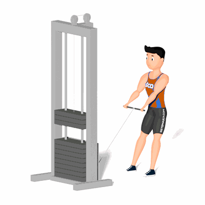

Agachamento no Cross Over

Exercício para fortalecimento e hipertrofia dos músculos da coxa e glúteos. Indicado a praticante de musculação nível avançado.
Ficha Técnica
Tipo: Musculação
Grupo Muscular: Perna
Aparelho: Nenhum
Músculos: Nenhum
Como realizar
- Fique de pé de frente com o Cross Over;
- Segure a barra reta na polia baixa;
- Mantenha os pés afastados na largura do quadril, tronco reto e abdômen contraído;
- Realizar a flexão dos joelhos, junto com a flexão do quadril;
- De maneira controlada, retorne a posição inicial.
 RC STORE
RC STORE